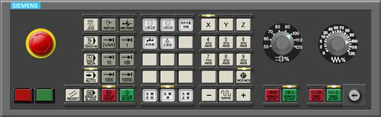
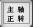
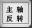
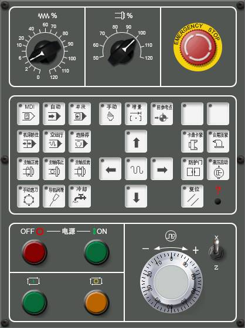
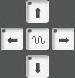
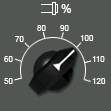

MDA :
AUTO ：
JOG ：
REFPOT :
手动方式回参考点.
VAR :
SINGL :
SPINSTAR :

主轴正转.SPINSTAR :

主轴反转.SPINSTP :
主轴停止.
RESET :
CYCLESTAR :
CYCLESTOP :
循环停止.
方向键 :
紧急停止旋钮.
主轴速度调节旋钮.

进给速度（F）调节旋钮.

沈阳机床厂828D T操作面板

MDI:
用于直接通过操作面板输入数控程序和编辑程序。
自动 ：
进入自动加工模式.
手动 ：
手动方式,手动连续移动台面或者刀具。
回参考点 :
手动方式回参考点.
增量 :
��量选择.
单段 :
自动单段运行.
主轴正转:
机床主轴正转.
主轴反转:
机床主轴反转.
主轴停止:
机床主轴停止.
复位 :
复位键.
循环启动:
循环启动键.
循环停止 :
循环停止键.
方向键 :

选择要移动的轴.紧急停止旋钮.

主轴速度调节旋钮.

进给速度（F）调节旋钮.